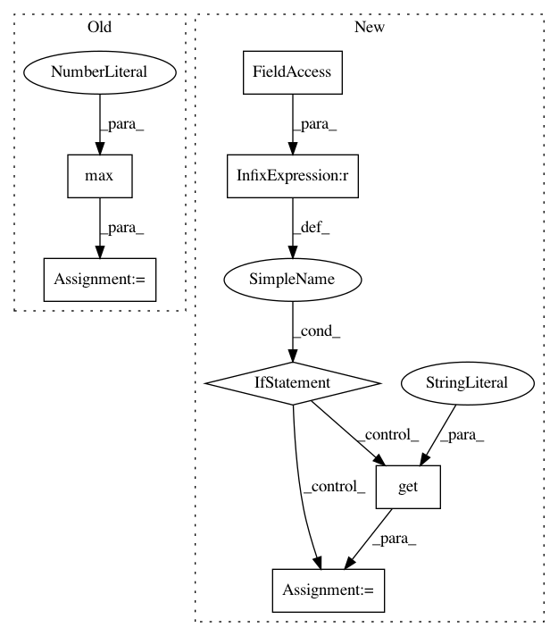

1c6679294848f303a361cba7b306b760e299bd9c,fairseq/sequence_scorer.py,SequenceScorer,generate,#SequenceScorer#Any#Any#,21
Before Change
score_i = avg_probs_i.sum() / tgt_len
if avg_attn is not None:
avg_attn_i = avg_attn[i, start_idxs[i]:]
_, alignment = avg_attn_i.max(dim=0)
else:
avg_attn_i = alignment = None
hypos.append([{
"tokens": ref,
After Change
model.eval()
decoder_out = model.forward(**net_input)
attn = decoder_out[1]
if type(attn) is dict:
attn = attn.get("attn", None)
batched = batch_for_softmax(decoder_out, orig_target)
probs, idx = None, 0
for bd, tgt, is_single in batched:
sample["target"] = tgt
In pattern: SUPERPATTERN
Frequency: 3
Non-data size: 7
Instances
Project Name: elbayadm/attn2d
Commit Name: 1c6679294848f303a361cba7b306b760e299bd9c
Time: 2019-09-30
Author: sarthak_garg@apple.com
File Name: fairseq/sequence_scorer.py
Class Name: SequenceScorer
Method Name: generate
Project Name: WZBSocialScienceCenter/tmtoolkit
Commit Name: 098f69b7c2282a556fc0b57d37b70328457de834
Time: 2017-10-11
Author: markus.konrad@wzb.eu
File Name: tmtoolkit/lda_utils/evaluation_lda.py
Class Name: MultiprocEvaluationWorkerLDA
Method Name: fit_model_using_params